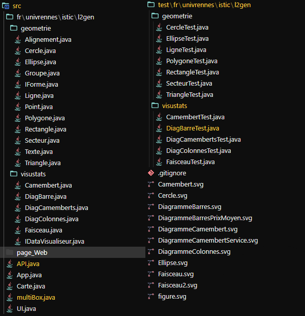
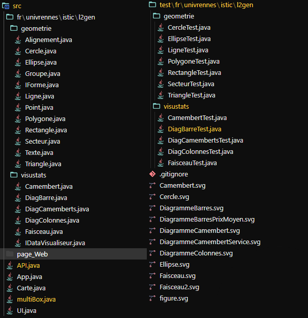

PROJET GENIE LOGICIEL
🠛
Projet d'application Swing en cours de Génie Logiciel en L2.
Product Owner
Programmation, Design, Rectangles
Java, JSON, SVG


Le projet était de créer une application, qui, avec une API ainsi
qu'une base de données.
Cette application cherche et compare les prix, atout, et +
des stations essence en France.

Faire cette application était un réel défi, car les interfaces
Swing sont plutôt compliquées à designer.
Nous sommes tout de même arrivés à une interface
compréhensible, et facile d'utilisation.
 
Demander le résultat sur l'application redirige vers un site
web, qui contient des comparaisons, des graphiques, en fonction des filtres
choisis.
Pour que tout cela fonctionne, il fallait d'abord créer chacune des formes que nous
allions utiliser dans l'application.
Cette application contient une carte pratique, car elle permet de choisis des
régions et département avec un seul clic.
Un clic gauche à un endroit choisi ajoute
le département situé au clic, et un clic droit ajoute la région située au clic.
Il
est également possible de choisir les filtres (ce qu'on va comparer), les carburants à comparer et les
options (des stations essence) avec les listes déroulantes sur le côté gauche.